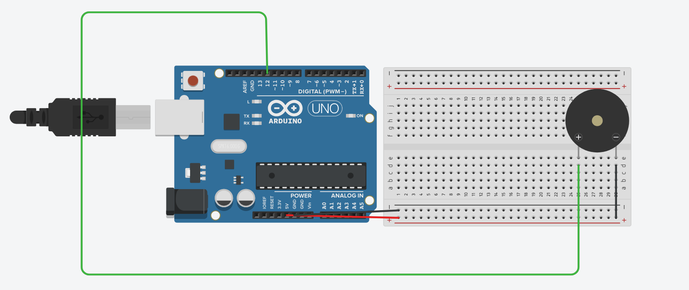

👉 الخطوة 1: هات البازر وشوف رجليه – الطويلة = موجب (أنود)، القصيرة = سالب (كاتود).
⚡ الخطوة 2: وصل الرجل الطويلة (الأنود ➕) في أي مخرج رقمي في الأردوينو – وليكن المخرج 12.
🧲 الخطوة 3: وصل الرجل القصيرة (الكاتود ➖) في مخرج GND في الأردوينو.
🎵 كده خلاص! لما المخرج 8 يبقى HIGH البازر هيطلع صوت BEEEEEP! 🔥
